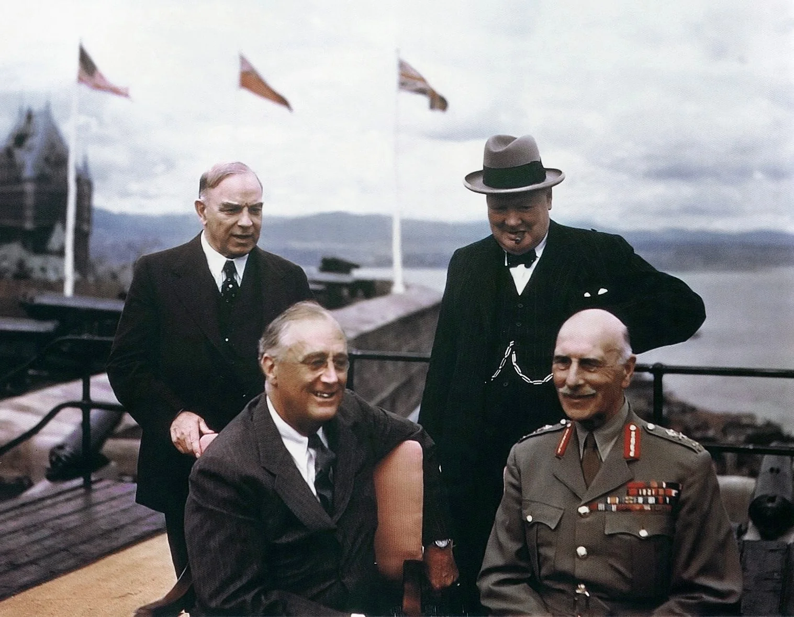
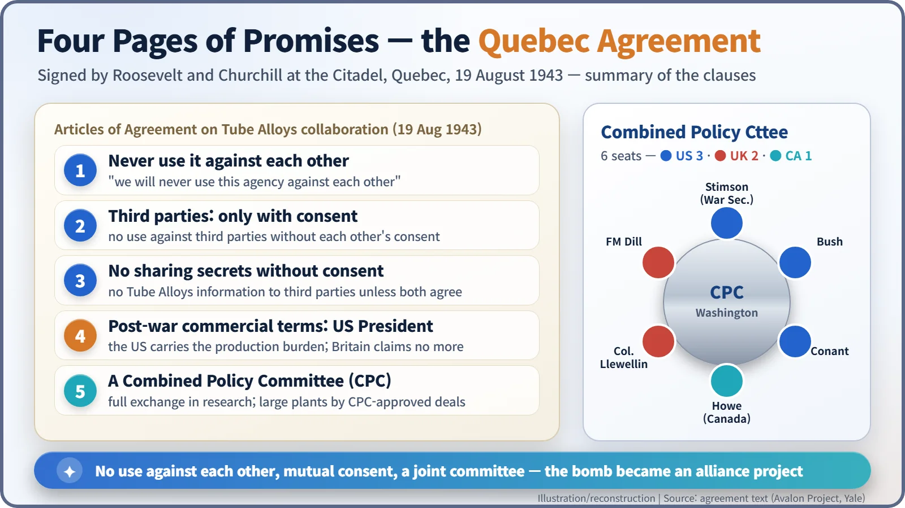
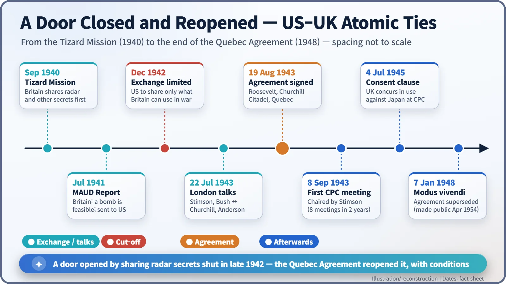

Nuclear History · 095
Four Pages of Notepaper, One Alliance — The Quebec Agreement and the Combined Policy Committee (1943)
Signed at the Citadel in Quebec on 19 August 1943, four pages of notepaper turned the atomic bomb into an alliance project, with conditions attached.
On 19 August 1943, at the Citadel in Quebec City, Franklin D. Roosevelt and Winston Churchill signed a short secret agreement on four sheets of notepaper. It reopened atomic cooperation between the United States and Britain, set out five conditions for the joint bomb project and created a Combined Policy Committee in Washington. The text stayed secret until 1954.
A document read aloud eleven years late
On 5 April 1954, in the House of Commons, the 79-year-old Prime Minister Winston Churchill (1874–1965) began to read an old document aloud. It was a short agreement written eleven years earlier on four sheets of notepaper from the Citadel, the fortress that crowns Quebec City. Until that day it had never been made public. The terms on which Britain and the United States would build, and use, the atomic bomb together had stayed locked away for almost nine years after the war ended. Those four pages are the Quebec Agreement. [4]
Britain ran first; America closed the door
In the race to understand the bomb, Britain was out in front at first. In the summer of 1941 Britain's MAUD Committee concluded that a uranium bomb was feasible, and that conclusion helped push the United States from "research" to "construction". The British gave their own project a deliberately dull code name: Tube Alloys.
Then the balance flipped. As the Manhattan Project grew into an industrial giant in 1942, the Americans grew more guarded. In December 1942 President Franklin D. Roosevelt (1882–1945) agreed to limit what Britain was told to information it could use during the war itself. Some American officials also suspected that Britain was positioning itself for a profitable post-war atomic industry. By early 1943 the door between the two programmes was effectively shut. [4] [5]
An anxious Churchill pressed for the partnership to be restored at the Washington conference in May 1943. On 22 July, at 10 Downing Street, US Secretary of War Henry L. Stimson and science administrator Vannevar Bush sat down with Churchill and Sir John Anderson (1882–1958), the minister responsible for Tube Alloys. Churchill insisted he had no interest in post-war commercial gain. Anderson drafted an agreement and carried it to Washington in early August. [4]
19 August 1943, the Citadel, Quebec
The stage was Canada. The First Quebec Conference, hosted by Canadian Prime Minister W. L. Mackenzie King (1874–1950), opened on 17 August, and two days later, on 19 August, Roosevelt and Churchill signed the document at the Citadel. Its formal title was the "Articles of Agreement Governing Collaboration Between the Authorities of the U.S.A. and the U.K. in the Matter of Tube Alloys". The preamble declared it "vital to our common safety in the present War" to bring the project to fruition as quickly as possible, pooling people and resources instead of duplicating huge plants on both sides of the Atlantic. [1] [2]

Five clauses and six chairs
The heart of the agreement was five commitments:
- "First, that we will never use this agency against each other."
- "Secondly, that we will not use it against third parties without each other's consent."
- "Thirdly, that we will not either of us communicate any information about Tube Alloys to third parties" without mutual consent.
- "In view of the heavy burden of production falling upon the United States", any post-war industrial or commercial advantages would be settled on terms the US President considered fair, and the British Prime Minister disclaimed any interest beyond that.
- A Combined Policy Committee (CPC) would be set up in Washington.
Think of it as a co-founders' agreement for a start-up: the partners promise never to compete against each other, both must sign off before the company's know-how goes to anyone else, and the partner putting in most of the money gets to set the terms for sharing future profits. Clause four was a hard bargain for Britain, but for a partner left standing outside the door, getting back in mattered more. [2]
The committee had six seats. The United States held three (Stimson, Bush and James B. Conant), Britain two (Field Marshal Sir John Dill and Colonel J. J. Llewellin), and Canada one, filled by C. D. Howe, the Minister of Munitions and Supply. The deal is often described as a three-nation pact, but Canada was not a signatory; it was a participant with one seat at the table. The committee agreed the joint programme of work, allocated scarce materials and equipment, and settled disputes over how the agreement should be interpreted. Scientists in the same field were to exchange research information in full, while information on the large production plants would flow only under arrangements the committee approved, a nod to American caution. [1]
| Country | Seats | Members |
|---|---|---|
| United States | 3 | Secretary of War (Henry L. Stimson), Vannevar Bush, James B. Conant |
| United Kingdom | 2 | Field Marshal Sir John Dill, Colonel J. J. Llewellin |
| Canada (not a signatory) | 1 | C. D. Howe |

When the promises went to work
The committee held its first meeting on 8 September 1943, with Stimson in the chair. It met formally only eight times over the next two years, but the door had reopened. In November 1943 Mark Oliphant arrived in Berkeley, where the British team grew to 35 people. On 12 January 1944 James Chadwick, the discoverer of the neutron, arrived at Los Alamos. On 13 June 1944 the two leaders set up the Combined Development Trust to secure uranium ore jointly. [4] [5]
The second clause, mutual consent, was put to use on 4 July 1945 at a committee meeting in the Pentagon. The minutes record: "Field Marshal Wilson stated that the British Government concurred in the use of the T. A. weapon against Japan." How that decision came to be made is a large story of its own; here it is enough to note this single line. [3]
A door reopened, with conditions
The Quebec Agreement shows that the atomic bomb was, from the start, an alliance project rather than the work of one nation. It also shows that tensions over post-war advantage were written into that alliance, as clause four makes plain. A year later the two leaders added a secret note at Hyde Park, and after the war a new US atomic energy law shut the flow of information again. The Quebec Agreement was formally superseded by a "modus vivendi" on 7 January 1948. [4]
